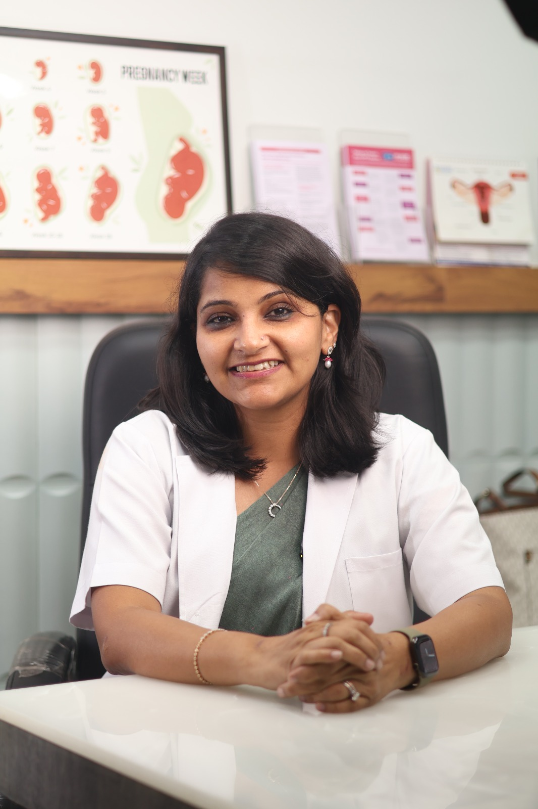
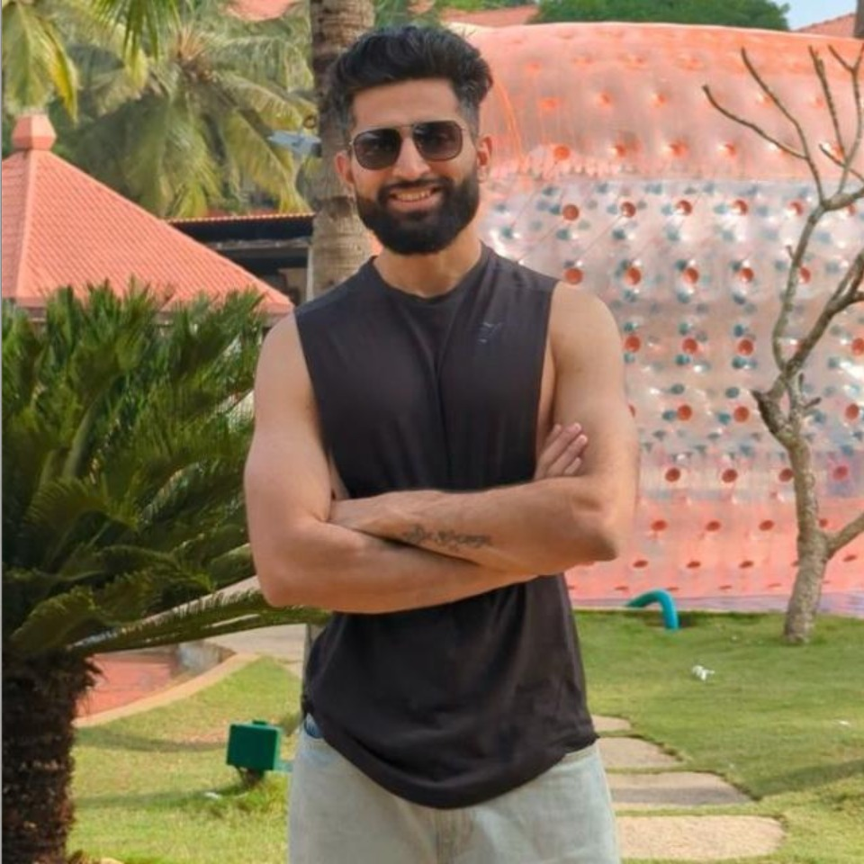
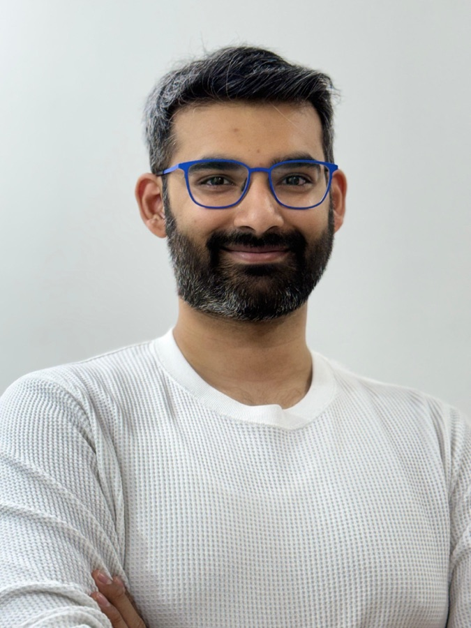

MBBS, MS (OBS & GYNAE)
Dr. Akanksha Srivastava
Obstetrician and gynaecologist with 14 years of experience, currently at Motherhood Hospital, Gurgaon.


MBBS, MS (OBS & GYNAE)
Obstetrician and gynaecologist with 14 years of experience, currently at Motherhood Hospital, Gurgaon.
Chief Scientific Advisor
Principal Scientist at PopVax | Ex-Harvard | Ex-TIFR Hyderabad

Nutrition and Exercise coach
Certified nutrition and fitness coach based in London | Ex-Google

Founder
IIIT Hyderabad alum. Spent 6 years at Microsoft as a software engineer before building SrotaBio.
Core team
Core team
Also a IIIT Hyderabad alum, with many years spent in product research and strategy. Joined the SrotaBio founding team to bring her craft to a cause close to her heart.
Core team